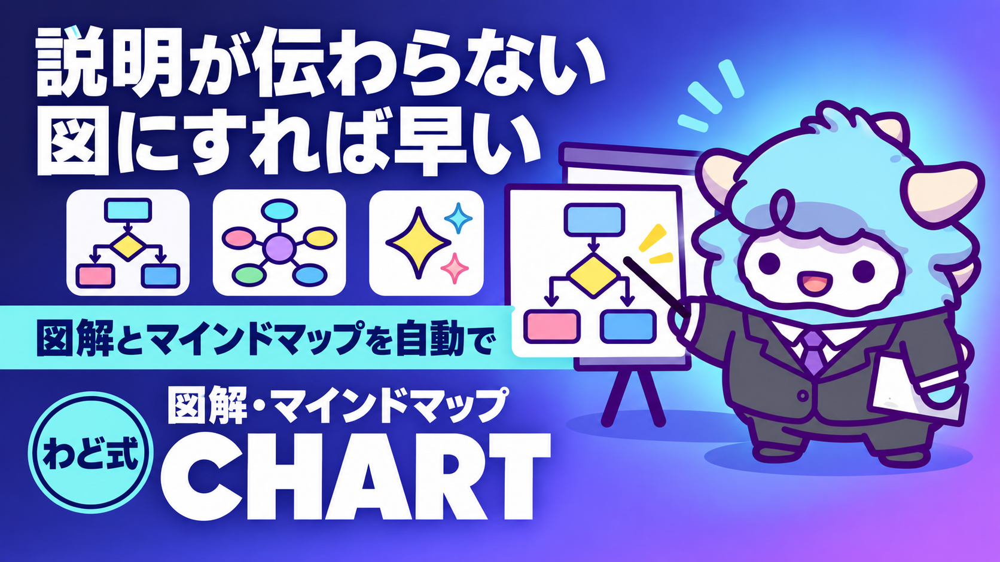

図解・マインドマップ生成 Skill 2本
文章を図にする。どの型で描くかの決定表つき
このページが特典の本体です。下へスクロールして使ってください図解・マインドマップ生成 Skill 2本
文章のまま渡すより、図にした方が伝わる場面は多いです。ですが「どの型で描くか」を自己流で決めていると、途中でMermaidが崩れて表に作り直す、という往復が起きます。この特典は、図の型を1つに決める判断のSkillと、文章を1枚のマインドマップに変えるSkillの2本です。
はじめに
「この内容、図にしたら伝わりやすいのに」と思う場面は、AIで収益を上げていく過程で何度も出てきます。
- noteやBrainの記事で、比較や手順を文章だけで説明していて長くなる
- Instagramのストーリーズで、選択肢を並べて見せたい
- Xのスレッドで、自分の考えを整理して見せたい
- 商品の使い方を、手順として1枚で見せたい
- 自分の頭の中の考えを、書き出して整理したい
こういうとき、多くの人はいきなり「図を描いて」とAIに頼みます。その結果、比較したいだけなのにフローチャートが返ってきたり、簡単な話なのに複雑な図になったり、途中で崩れて作り直す、ということが起こります。
原因は「何の型で描くか」を最初に決めていないことです。この特典は2つのSkillでこの問題を解決します。
- 図の型を決めるSkill — 絵は描きません。「比較表か、フローチャートか、タイムラインか、マインドマップか」を先に1つに決めるための判断だけを担当します
- マインドマップにするSkill — 文章や資料の内容を、見出しの階層構造に変換し、そのまま1枚のマインドマップとして表示できる形にします
2本セットで使うと、「型を決める→実際に作る」までを迷わず一直線に進められます。
この特典の進め方
- まず「考え方」の章を読み、なぜ型を先に決めると手戻りがなくなるのかを掴む(5分)
- 使っているAIに合わせて設置する - Claude Codeをお使いの方 → 「プロンプト全文」の2つのSkillファイルをそのまま保存する - ChatGPTやGeminiをお使いの方 → 同じ節にある代替プロンプトをコピーして使う
- 今、実際に説明したい・整理したい内容を1つ選び、「最初に投げるプロンプト」で動かしてみる
- 出てきた型で、実際に1枚図・1枚マインドマップを完成させる
型は暗記するものではなく、渡すたびにAIに判断させるものです。まずは手元にある文章を1つ、実際に流し込んでみてください。
最初のゴール(今日やる1つ)
今、人に説明するのに苦労している内容を1つ選んでください(比較・手順・自分の考えの整理、どれでも構いません)。それを「最初に投げるプロンプト」でAIに渡し、型を1つ決めてもらい、実際にコードまたはマインドマップの見出し構造を1つ受け取ってください。読むだけで終わらせず、1回動かすことがこの特典の価値のほぼ全部です。
考え方(なぜ型を先に決めると手戻りがなくなるのか)
図を作るときに一番時間を溶かすのは、「これは何の図か」を決めずに描き始めることです。よくある失敗パターンは次のとおりです。
- とりあえずMermaid(フローチャートを描くための書き方)で描き始める → 実は比較したいだけだった → 表に作り直す
- 情報を全部1つの図に詰め込もうとする → ノードが増えすぎて読めなくなる → 分割して作り直す
- 色や飾りを先に決める → 情報量が変わるたびにレイアウトが崩れる
これを避けるには、「何が主役か」を1問で判定してから描き始めることです。
| 何が主役か | 選ぶ型 |
|---|---|
| いくつかの案・商品・選択肢を横に並べて比べたい | 比較表 |
| 手順や工程が順番に流れる。誰が誰に何を渡すかが大事 | フローチャート |
| 出来事や締切が時間の順番で並ぶ | タイムライン |
| 1つの考えから枝分かれして整理したい | マインドマップ |
判定に迷ったら、「つながり(誰が誰に何を渡すか)が主役か、説明文の量が主役か」の1問で割ります。それでも決まらないときは、作り直しのコストが一番低いフローチャートを選んでおけば、あとから比較表に組み替えるのも簡単です。
マインドマップは別扱いです。他の3つが「関係性」を描くのに対し、マインドマップは「1つの起点からの枝分かれ」を描きます。見出しの階層(大見出し→中見出し→小見出し)というシンプルな構造に落とし込めるので、AIに一発で作らせやすいのが特徴です。
プロンプト全文(型ごと・コピーして使える形)
以下は、AIに渡すためのプロンプト・Skill全文です。ChatGPT・Gemini・Claude Codeのどれでも使えるように、2パターンずつ用意しています。
Skill 1: 図の型を決める
Claude Codeをお使いの方は、以下を ~/.claude/skills/diagram-type-picker/SKILL.md として保存してください。保存後は「これ、図にできる？」「図解して」と話しかけるだけで動きます。
---
name: diagram-type-picker
description: 説明したい内容を渡すと、比較表・フローチャート・タイムライン・マインドマップのどれで描くべきかを1つに決め、そのまま使えるコードを返すSkill。
version: "1.0.0"
---
# 図の型を決める
## 使う場面
- 「これ、図にしたいけどどう描けばいいか分からない」
- 発動語: 「図解して」「表にして」「図にできる？」
## Step 1: 何が主役かを判定する
| 質問 | 該当する型 |
|---|---|
| いくつかの案・商品・選択肢を横に並べて比べたい | 比較表 |
| 手順や工程が順番に流れる。誰が誰に何を渡すかが大事 | フローチャート |
| 出来事や締切が時系列に並ぶ | タイムライン |
| 1つの考えを枝分かれさせて整理したい | マインドマップ(別Skillに渡す) |
不明なら、上の4択を提示して選んでもらう。
## Step 2: 型ごとの出力
- 比較表 → Markdownのテーブル記法で出す。3列以上・4行以上あるときだけ表にする。それ以下は箇条書きで十分
- フローチャート → Mermaidの `flowchart TD`(上から下)で出す。ノードが10個を超えたら、上位概念でまとめて分割する
- タイムライン → 「日付 → 出来事」を縦の箇条書きで並べる
- マインドマップ → マインドマップ用Skillに渡す
## Mermaid使用時の注意(描く前に確認する)
1. 既定は `TD`(上から下)。`LR`(左から右)は3〜4ノードの単純な流れだけに使う
2. ノードが10個を超えると文字が小さくて読めなくなる。テーマの文字サイズ設定を大きくするよう指示する
3. 状態遷移を描く書き方(`stateDiagram-v2`)は、ラベルにコロン・括弧・改行を入れると無言でエラーになる。特殊文字が必要なら `flowchart TD` に切り替え、エッジラベルを引用符で囲む(`|"ラベル"|`)
4. 配色は紫系のグラデーション(`#8b5cf6` 等)を避ける。落ち着いた1〜2色に絞る
## 判断基準(OK条件)
- 選んだ型を1つ言い切れているか(「どちらでも」で終わっていないか)
- ノード・行の数が、読み手が一目で追える範囲(目安10〜15以下)に収まっているか
## 出力
決めた型の名前と、その場でコピーして使えるコード(Mermaidまたは Markdown)を返す。型を決めるだけで終わらせない。
Claude Codeをお使いでない場合は、以下をそのままChatGPT・Geminiに貼ってください。
これから図にしたい内容を渡します。
まず、次の4つのうちどれに近いか判定してください。
1. 比較表(いくつかの案・商品を横に並べて比べたい)
2. フローチャート(手順や工程が順番に流れる)
3. タイムライン(出来事や締切が時系列に並ぶ)
4. マインドマップ(1つの考えを枝分かれさせたい)
判定した型で、そのままコピーして使える形(表ならMarkdownの表、フローチャートならMermaidのflowchart TD、タイムラインなら箇条書き)で出してください。
ノードや行が10個を超える場合は、上位概念でまとめてから枝分かれさせてください。色は紫系のグラデーションを避け、落ち着いた1〜2色にしてください。
[ここに説明したい内容を貼る]
Skill 2: マインドマップにする
Claude Codeをお使いの方は、以下を ~/.claude/skills/mindmap-outline-maker/SKILL.md として保存してください。
---
name: mindmap-outline-maker
description: テキストや資料の内容を、見出しの階層構造に変換し、そのままマインドマップとして表示・共有できる形にするSkill。
version: "1.0.0"
---
# マインドマップにする
## 使う場面
- 資料・自分の考えを、1枚のマインドマップにしたい
- 発動語: 「マインドマップにして」「構造を整理して」
## Step 1: 入力を確認する
- ファイル・テキストがそのまま渡された → そのまま使う
- 自然言語で「こういう内容をまとめたい」と言われた → 内容を整理してから見出し構造に変換する
## Step 2: 見出し構造に変換する
大見出し→中見出し→小見出しの階層(最大6階層)で組む。
1. 各見出しは短く(15字以内が目安)。説明は見出しの下の箇条書きに逃がす
2. 1つの見出しの下に枝が1本しかない場合、その見出し自体が不要な可能性がある。統合を検討する
3. 同じ階層の見出し同士は粒度を揃える(片方は単語、片方は一文、という不揃いを避ける)
4. 7階層以上必要になっても、無理に階層を増やさず箇条書きで下にぶら下げる
## Step 3: 確認する(OK条件)
- トップレベルの枝が3〜7個に収まっているか(多すぎる場合は上位概念でまとめ直す)
- 見出しの深さが、実際の情報構造と一致しているか(浅すぎず、深すぎない)
- 日本語が文字化けしていないか
## Step 4: 表示する
できた見出し構造は、次のどちらかで表示する。
- チャット上でMermaidの `mindmap` というマインドマップ用の書き方でそのまま貼り、描画させる
- 見出し構造のMarkdownを、マインドマップ表示用の無料オンラインツールにそのまま貼る
## 出力フォーマット
1. 完成した見出し構造(Markdown)
2. トップレベルの枝の数と主要項目の要約(1〜2行)
3. 表示方法の案内
Claude Codeをお使いでない場合は、以下をそのままChatGPT・Geminiに貼ってください。
以下の内容を、大見出し→中見出し→小見出しの階層構造(最大6階層)に変換してください。
各見出しは15字以内に短くし、説明はその下の箇条書きに逃がしてください。
トップレベルの枝は3〜7個に収めてください。多すぎる場合は上位概念でまとめ直してください。
最後に、マインドマップとして表示するための書き方(Mermaidのmindmap形式)でも出力してください。
[ここに整理したい内容を貼る]
Mermaidのmindmap形式で出てきたコードは、そのままAIのチャット画面上でも読めますが、ズームや折りたたみをしながら見たい場合は、公式の無料オンラインビューア(https://markmap.js.org/)に見出し構造のMarkdownをそのまま貼ると、その場でマインドマップとして表示できます。
使い分けの判断
| こんなとき | 使うSkill・型 |
|---|---|
| noteやBrainの記事に、他社との違いを見せたい | Skill1 → 比較表 |
| 商品の使い方・申込みの流れを見せたい | Skill1 → フローチャート |
| ローンチや発信のスケジュールを見せたい | Skill1 → タイムライン |
| 自分の考え・企画のアイデアを整理したい | Skill2 → マインドマップ |
| 会議やセミナーの内容を後から見返せる形にしたい | Skill2 → マインドマップ |
| 2つのものを1行で比べれば済む | どちらも使わない。箇条書き1〜2行で十分 |
図は「情報量が多く、文章だけだと読み手が迷う」ときにだけ使います。要素が2〜3個で済む話を無理に図にすると、かえって読みにくくなります。
うまくいかないときの直し方
- 型を決めずに「とりあえず描いて」と頼む → 先に4つの型(比較表・フローチャート・タイムライン・マインドマップ)から1つ選んでもらう
- 何でもフローチャートで済まそうとする → 比較は表に、時系列は箇条書きに、それぞれ割り振る
- ノードや枝を詰め込みすぎる(15個以上になる) → 上位概念でグループ化してから枝分かれさせる
- 色をその場の思いつきで指定する → 紫系のグラデーションなど「AIが作ったとすぐ分かる配色」を避け、落ち着いた1〜2色を指定し直す
- マインドマップの階層を無理に7段以上にする → 箇条書きに逃がす。階層を増やしすぎない
- できた図をそのまま貼り付ける → 一度実際に表示させて、崩れていないか確認してから使う
- 一度崩れても同じ型のまま粘る → 型選びからやり直す(比較表がうまくいかないならフローチャートに変える、等)
最新AI(2026年9月時点)での書き方の変化(取得日: 2026-09-06)
2026年9月3日、OpenAIが新しい大規模モデルを発表しました。目立つ特徴は「画面の情報を読み取り、承認された範囲でアプリを操作できる」機能です。この機能は数日かけて順に使えるようになる案内になっており、プランに含まれていても、自分のアカウントにまだ表示されていないことがあります。使えるかどうかはご自身の画面で確かめてください。
図解・マインドマップづくりの現場での意味は次のとおりです。
- 既存の資料やスプレッドシートを、画面越しにAIへ読み取らせて図にする、という使い方の余地が広がってきています。ただし画面に映っているものを、AIがそのまま指示として受け取ってしまう可能性が指摘されています。図の元ネタにする画面は、信頼できるもの・見せてよいものに絞ってください
- 「型を決めてから描く」という考え方自体は、どのAIを使っても変わらず有効です。新しいモデルが出るたびに、この特典の判断基準を変える必要はありません
- Mermaidの書き方(
flowchart TD等)や見出し構造への変換は、汎用的なテキストの書き方であり、特定のAIに依存しません。使うAIが変わっても、同じSkill・プロンプトがそのまま使えます
最初に投げるプロンプト
これから図・マインドマップにしたい内容を渡します。
まず、比較表・フローチャート・タイムライン・マインドマップのどれで描くべきかを判定してください。
判定した型で、そのままコピーして使えるコード(MermaidまたはMarkdown)を出してください。
ノードや行が10個を超える場合は、上位概念でまとめてから枝分かれさせてください。
[ここに説明したい・整理したい内容を貼る]
よくある失敗 7つと直し方
- 図を作ること自体が目的になってしまう → 「何を伝えたいか(結論)」を先に1行書いてから型を選ぶ
- 持っている情報を全部1枚に詰め込もうとする → 伝えたい結論に関係ない情報は思い切って削る
- 作った図を見返さずにそのまま公開する → 一晩置くか、読み手の立場に立って見直してから出す
- Skillを設置しただけで満足してしまう → 実際に自分の資料で1回動かし、コピーできる状態を確認するまでが設置
- マインドマップを作って終わり、行動に落とさない → 出てきた枝の中から「今日やる1つ」を1個決める
- 毎回ゼロから型を考え直す → 一度うまくいった型は「使い分けの判断」表を見返して使い回す
- AIが出した図をそのまま人に見せて、説明を省いてしまう → 図はあくまで補助。口頭・文章での説明を図に丸投げしない
安全に使うための注意
- 図に入れる数字・実績は、自分で裏取りしたものだけを使ってください。AIが仮に置いた数字をそのまま図にしないでください
- 社内・顧客の非公開情報を図に含める場合、共有先(誰が見るページか)を先に確認してください
- 画面を読み取って操作するタイプのAI機能を使う場合、見せる画面に機密情報が映っていないか確認してください。画面に映った内容をそのまま指示として読み取ってしまう可能性が指摘されています
- 公開・共有する前に、誤字や数字の間違いがないか必ず目視で確認してください
つまずいたときに聞くプロンプト
さっき作ってもらった[比較表/フローチャート/タイムライン/マインドマップ]について、[具体的に気になる点]が気になります。
同じ内容のまま、[直したい点]を直してもう一度出してください。
用語集
| 用語 | 意味 |
|---|---|
| フローチャート | 手順や工程の流れを、箱と矢印で表した図 |
| ノード | 図の中の1つの箱(要素)のこと |
| エッジ | ノードとノードをつなぐ線・矢印のこと |
| Mermaid | 文章の書き方だけで図を自動生成できる、AIとの相性が良い記法 |
| マインドマップ | 1つの考えを中心に、関連する項目を枝分かれさせて広げていく図 |
| 見出し構造 | 大見出し・中見出し・小見出しのように、情報を階層で整理した状態 |
| テーマ変数 | 図の色・文字サイズなど、見た目を調整するための設定項目 |
| Skill | AIに手順や判断基準を覚えさせるための指示書ファイル |
出す前の品質チェック(10項目)
- その図が「比較表・フローチャート・タイムライン・マインドマップ」のどれか、1つに言い切れているか
- 要素が2〜3個で済む話を、無理に図にしていないか
- ノードや枝の数が、読み手が一目で追える範囲(目安10〜15以下)に収まっているか
- 同じ階層の見出し・ノードの粒度が揃っているか
- 色が紫系グラデーションなど「AIが作ったとすぐ分かる配色」になっていないか
- 実際に表示・レンダリングして、崩れていないか確認したか
- 図の中の数字・実績を、自分で裏取りしたか
- 誤字・変換ミスがないか
- 見る人にとって、図なしの文章より分かりやすくなっているか
- 公開・共有する媒体に合った形式(画像・コードブロック・PDF等)になっているか
次の一手
この特典は、稼ぎ方より稼ぐ順番のどのSTEPでも使える、説明を「伝わる形」に変えるための道具です。STEP1の提案資料、STEP2の商品説明、STEP3の告知やスケジュール、どこでも同じ2つのSkillが使えます。面談では、あなた専用の1枚(特注のロードマップ)を一緒に作ります。
最終チェックリスト
- [ ] 2つのSkill、または代替プロンプトを、自分が使っているAIに設置した
- [ ] 実際に手元の内容を1つ選び、型を決めてもらった
- [ ] 決まった型で、実際にコードまたは見出し構造を1つ受け取った
- [ ] 表示・レンダリングして崩れていないか確認した
- [ ] 「安全に使うための注意」の4項目を確認した
- [ ] 「出す前の品質チェック」10項目を通してから公開・共有した